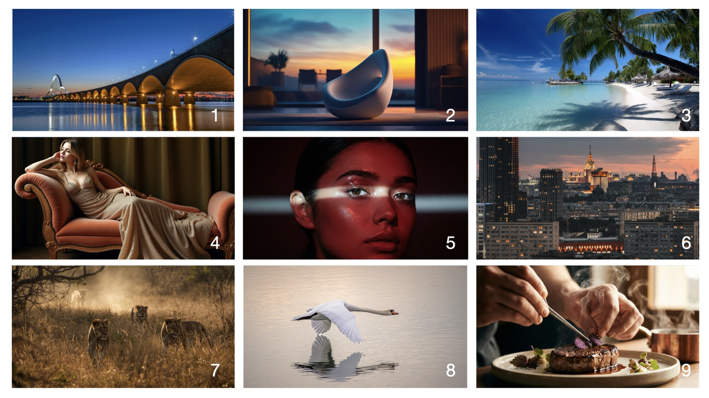

Printable exercise · Text and images
Two short tests that show how hard it has become to tell AI-generated content from content made by people. Take them yourself, then let someone else take them, and talk about what you saw.
I'm not thinking about mass-produced AI slop, but the kind of output produced by people who know how to create quality content with these tools. Four texts on two topics follow. Two of them are AI-generated. Tick the two you think are.
Efficiency and AI
Text 1
Every year that goes by, school operations get more efficient. From one year to the next, that can be solved. But when we look at a longer time horizon it becomes very problematic in all sectors that work with people. In schools it's hard to be efficient, because student learning happens at a predetermined pace. So efficiency usually means cutting the number of people at a school, since salaries are the largest cost and therefore the largest saving. That means those who stay are forced to do more. Looking at how AI can make teachers' work more efficient becomes a must if those who work as teachers are going to handle ever-increasing demands with fewer and fewer resources.
This is AI-generatedText 2
Teachers I talk to who use AI in their work say the same thing: the time AI saves isn't really the point. AI can write the first draft of a piece of feedback, a parent letter, or an explanation of a tricky concept. That saves minutes. What happens in those minutes afterwards is what decides whether the student gets more of the teacher. Some teachers use the time to sit down with the student who's stuck, or to plan the next lesson more carefully. Others forward the draft and move on. The students notice the difference. The model isn't doing the teaching, and it shouldn't be. In practice, AI gives back time that routine writing has eaten up, and what that time gets used for decides the value.
This is AI-generatedSchool's role in society
Text 3
Most of what gets talked about when school is in the news comes down to results, rankings, and money. Those are the things that are easy to measure, which is part of why they dominate the conversation. But school has always been doing more than that. It also shapes how a generation thinks and what kind of people they grow into. A school system that is good at producing students who answer correctly on standardized tests is doing half its job. The other half — preparing young people for a world that nobody can predict the shape of — doesn't show up in the same numbers. It shows up later, in whether the students can still think for themselves once they're out of school. That doesn't change because we say it should. It changes when individual teachers, in individual classrooms, have the time and the room to lift their gaze beyond the next test. Whether they have that depends on whether the conditions around the school actually support it. The question of school's role in society is, in practice, the question of whether we build those conditions or not.
This is AI-generatedText 4
In a society that changes over time, it's important to be clear about what role we want school to play. Much of what school does today is left over from when school was primarily meant to educate people for jobs in manufacturing. In many countries those jobs have disappeared as technology has made huge leaps forward. That doesn't mean everything we do in school is bad, but when technology develops some things go up in value and others go down. That's nothing new, but today's technology development happens exponentially, so these increases and decreases in value are bigger and happen faster than before. For the students' sake we need to talk about what has gone up in value and what students need to take with them, and what has gone down in value and is no longer as important as it used to be. A student's time in school doesn't run on replay. No one has the answer, but together we can find the best way forward.
This is AI-generatedNine images. Some are AI-generated and some are not. Tick the ones you think are AI-generated.

Hint 1: Six of the images are AI-generated.
Hint 2: Each row contains exactly one image that is NOT AI-generated. Each column does too.
Ask a colleague, a friend or a student to take both tests. Then talk it through together:
Stop here until both of you have finished. The answers are printed upside down below.
Video doesn't print. The full version of AI or human?, with a video test and a short anonymous rating of how hard each test was, is at choosewise.education/ai-or-human.
© 2026 Johan Lindström · choosewise.education. Free to print and share with colleagues in its original form.